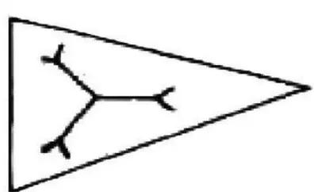

Material Grimoire
Reddener

Overview
The reddener is a specialized tool used for inlaying pigments into carved rune staves. In the ancient runic tradition, coloring the runes was an essential step in the creation process; the act of "making red" was synonymous with "endowing with magickal power."
Construction
The reddener can be made from a piece of wood about as thin as a veneer, cut in the shape of an isosceles triangle and inscribed with suitable runes.
One traditional model bears a galdrastafr (magickal stave) made up of four K-runes (three in the standard form and one connector in the alternate form). Ideographically, this is an intensification of the Kenaz-force. The numerical symbolism is also potent: 4 × 6, or 24, a magickal intensification of Kenaz in the context of the whole Futhark.
The Art of Coloring Runes
The runes were always colored with either red pigments or blood. To the ancient Germanic peoples, the verbal constructs "to make red" and "to endow with magickal power" were synonymous. German Zauber (magick) and Old Norse taufr (magick, talisman) both descend from this concept.
In the technical terminology of ancient runecraft:
- Proto-Germanic fahido = literally "I color"
- Old Norse fá = "to color"
Both terms came to mean "to fashion runes" in general, describing the entire complex process of carving, coloring, and consecrating the staves.
Traditional Pigments
- Red ocher: Known from Neolithic times; the oldest pigment used in runic work
- Minium (red lead): A latecomer to the tradition but widely adopted
- Madder: Obtained from the root of the madder plant (rubia tinctoria). The Old Norse form madhrn carries additional magickal potency through its association with madhr, the Old Norse word for "man"
All of these pigments are available in some form at art supply stores.
Preparation
Pigments should be ground with linseed oil or a gum mixture in a ritual manner just prior to the beginning of the runic rite. Linseed is derived from the seed of the flax plant, which is extremely important in runecraft. Its ancient name lina often appears in runic talismans for fertility, growth, and well-being.
During the grinding process, the Futhark or the runes to be used in the rite should be intoned, infusing the dye with the potential energy of those runes.
Blood as Pigment
All of the above pigments are symbolic substitutes for the innate magickal power held by blood, either human or that of a ritually sacrificed animal. If blood is used, no "preloading" is necessary. However, since the blood runes (the sanguine mysteries) are part of the religious expression, many vitkar will not concern themselves with them. All rituals may be performed powerfully using the venerable dyes described above.